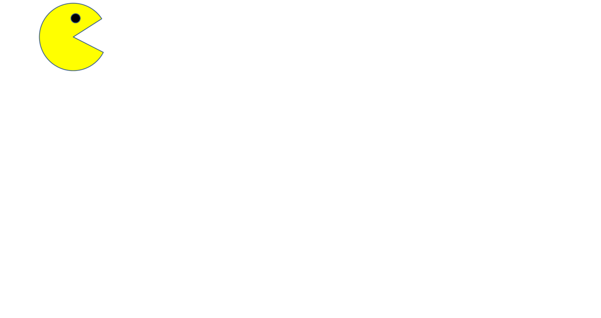
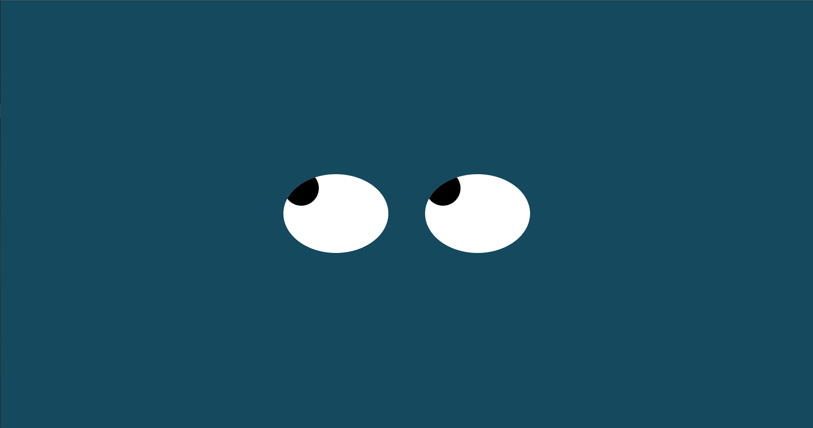
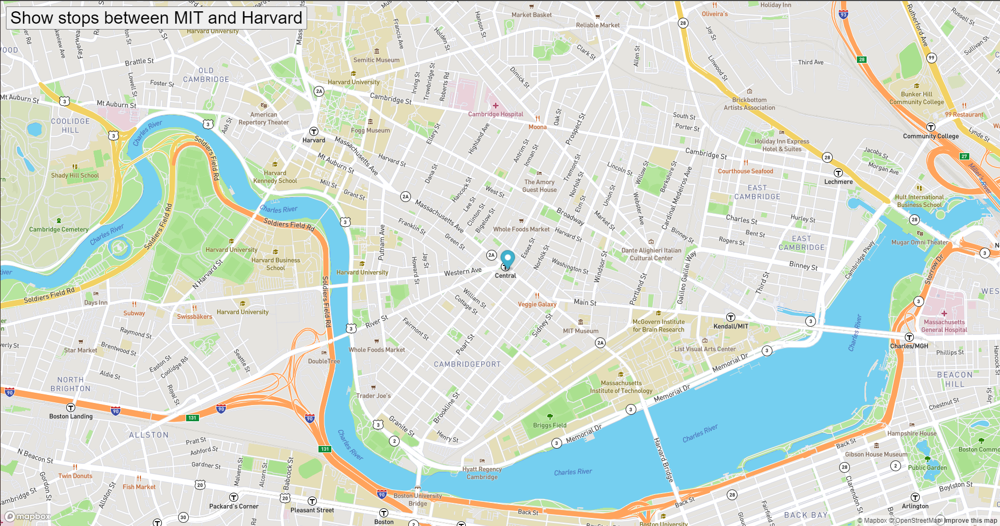

PacMen Exercise
Description:
This was my first project which involved coding in javascript. The purpose of the project is to have Pacman move across the screen with interchanging images. The first hurdle was to make pacman bounce from one side of the screen to the other. Another feature of the project for pacman to move once clicked upon.
Go to PacMen repositoryEyes
Description:
This project involves two sphere in the middle of the screen that resemble eyes. The purpose of this project is to have the two eyes follow the cursor around the screen. The project includes html, css and javascript to run successfully.
Go to Eyes repositoryReal Time Bus Tracking
Description:
This project involves two sphere in the middle of the screen that resemble eyes. The purpose of this project is to have the two eyes follow the cursor around the screen. The project includes html, css and javascript to run successfully.
Go to Bus Tracking repository